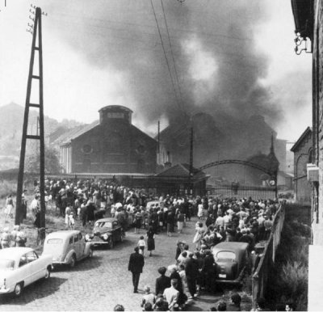

Pendant le Moyen Âge, outre au
commerce, également les
activités
artisanales se sont développées. Encore
aujourd'hui elles font partie d'une grande tradition comme la
production de tissu dans les
Flandres, d'armes à Bruxelles et de verre
à Charleroi. Le lin des Flandres
étaient l'orgueil des trousseaux de la Renaissance, comme
l'étaient la soie et les damas d'Orient. Les industries
textiles sont encore concentrées dans les Flandres, mais la
production du lin est dépassée par la production
de la laine et du coton. Les dentelles de Bruxelles, Bruges et
Malines sont aussi très renommées.
La Belgique est riche
de ressources minérales qui ont favorisé la
révolution industrielle.
La ressource principale
du pays a été le charbon,
dont les plus grands gisements se trouvaient dans la région de
Liège, de Mons et de Charleroi. Après la fermeture
des mines on a assisté à une forte baisse de
l'exploitation du charbon, à cause des coûts d'extraction
qui nétaient plus
compétitifs. Les gisements de la Wallonie sont pour
la plupart inactifs, en revanche une
modeste activité extractive continue dans les Flandres. Le
travail minier a déterminé l'émigration d'un grand
nombre d'italiens qui ont quitté leur pays pour s'installer en
Belgique. La terrible catastrophe de Marcinelle qui a eu lieu le
8 Août 1956 a
provoqué la mort de 262 mineurs sur un total de 274
travailleurs.
Le
22 Août, à 3
heures du matin, les équipes de
sauvetage déclareront en italien "tutti cadaveri". À la
fin 262 hommes ont perdu la vie, 136 italiens
e 95 belges.
Seulement une dizaine de mineurs ont survécu à ce
désastre.